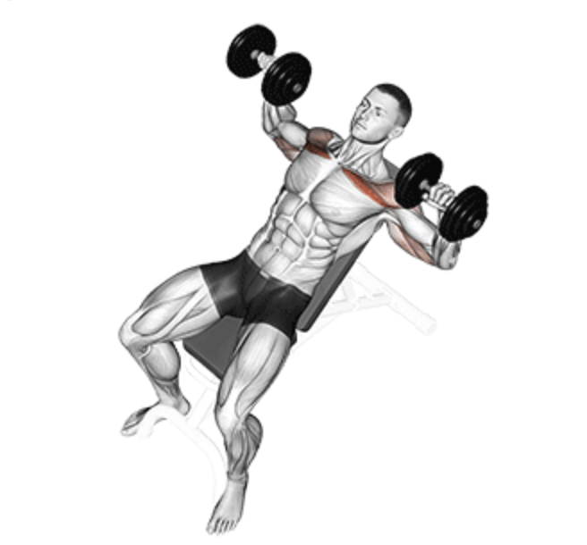
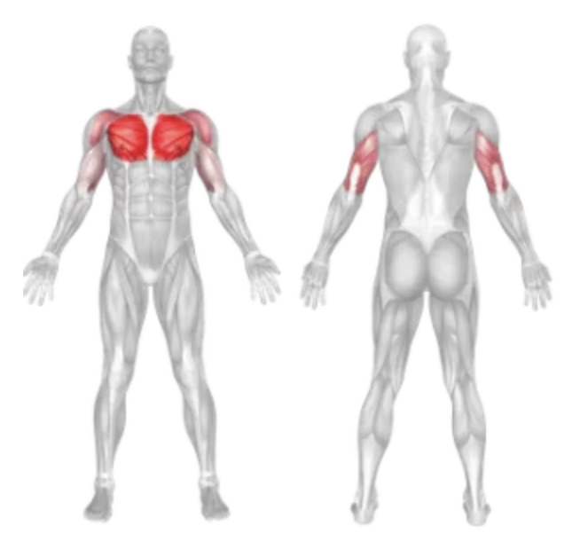
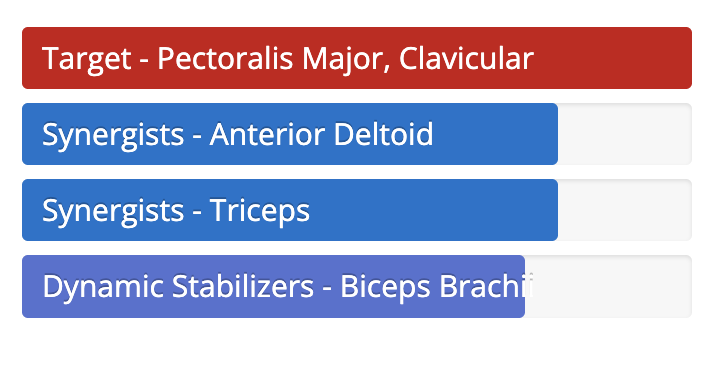

Incline Dumbbell Press
Setup
Set an adjustable bench to a 30–45° incline angle.
Sit down with a dumbbell in each hand resting on your thighs.
Lie back and use your thighs to help raise the dumbbells to chest level.
Hold the dumbbells with a neutral grip and position them slightly wider than shoulder-width apart.
Keep your feet flat on the ground, back arched, and shoulder blades retracted.

Execution
Press:
Push the dumbbells upward in a controlled motion until your arms are extended, but not locked.
Squeeze:
At the top, contract your chest muscles for maximum engagement.
Lower:
Slowly lower the dumbbells back to the starting position, maintaining tension in the chest.
Tips for Effectiveness
Wrist Alignment:
Keep wrists in line with forearms to avoid strain.
Full Range:
Lower the dumbbells until you feel a deep stretch in the upper chest.
Control the Movement:
Avoid using momentum—focus on smooth, deliberate motion.
Benefits of Incline Dumbbell Press
Upper Chest Focus:
Specifically targets the clavicular head of the pectorals.
Improved Balance:
Dumbbells require greater stabilization than a barbell.
Greater Range of Motion:
Enhances chest development and flexibility.
Muscles Worked in Incline Dumbbell Press


Do you want to change the language of this page?
English
Malayalam
Tamil
Hindi